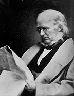

|

|

|
|
|
Newspaper editor Horace Greeley was born in Amherst, New
Hampshire, on February 3, 1811. In 1826 he entered into the
world of journalism, serving as a printer's apprentice for
the Northern Spectator of East Poultney, Vermont.
Over the next several years, Greeley worked for many
different newspapers in the northeast, editing several and
forming a political partnership with two powerful figures in
New York state politics, Thurlow Weed and William Seward.
Greeley's most important opportunity, however, arrived in
1841 when he founded and became editor of the New York
Tribune.
Greeley's role as editor of the Tribune not only
established his legacy but also allowed him to promote his
interests in reform, writing, and politics. He used his
editorials over the course of three decades to battle
against numerous vices and social problems, including
tobacco, alcohol, gambling, prostitution, and slavery. He
also pushed for land reform and a protective tariff that
would aid the American worker. Above all else, he strove
for his vision of national unity and harmony. As a result,
his support for labor did not encompass the encouragement of
what he saw as divisive strikes. He stood for freedom and
against slavery, yet in the 1840s and early 1850s he
expressed his opinions carefully, for he saw radical
abolitionism as a threat that could destroy the nation.
Greeley's expansive nationalism found expression in his
vision for the western lands. Although he did not invent
the phrase, Greeley has long been credited with first
saying, "Go west, young man." He became a strong proponent
of railroad development. In his mind, the open lands of the
West would provide land for numerous free labor settlers,
and bring prosperity for all, as long as the Southern
institution of slavery was not allowed to expand as well.
Long a "Conscience" Whig who stood against the "Cotton"
Whigs, Greeley helped found the Republican Party in 1854.
His newspaper took a powerful stand against the
Kansas-Nebraska Act and popular sovereignty, which he
believed would aid in the growth of slavery. Heading into
the crisis of the late 1850s, Greeley promoted peace and
harmony above all else. Greeley was intent on keeping the
nation together, even as he attacked slavery.
While he remained involved in New York state politics
throughout his life, Greeley ended his partnership with Weed
and Seward in 1854. He campaigned for John C. Frémont in
1856, and although he did not initially support Lincoln in
1859 for the Republican nomination, neither did he support
Seward, whom he believed lacked the necessary national
appeal. Throughout the years of the Civil War, Greeley
maintained an alternately supportive and adversarial
relationship with Lincoln through his editorials in the
Tribune. In the hope of avoiding war in 1860,
Greeley advocated letting the Southern states secede, for he
believed that most Southerners did not support secession,
and that these "erring sisters" would soon be forced to
return.
After the war began, the Tribune editorials
revealed a shift in Greeley's thinking. He began to
advocate the abolition of slavery as a primary war
objective, and encouraged Lincoln to formulate an
emancipation policy. Although his political positions
aligned him with the Radical Republicans, Greeley still
looked to find a compromise to end the War. As a result, in
July 1864, he found himself in Niagara Falls, meeting with
several Southern "peace commissioners." Given permission to
participate by an extremely skeptical President Lincoln, the
Tribune editor failed to bring anything but derision
upon himself for his efforts. As the War came to a close,
Greeley stated his support for a moderate reconstruction,
one that allowed for universal amnesty and impartial
suffrage, while at the same time promoting the long-range
goal of Republican predominance in national politics.
A man of principles, Greeley helped post bail for
Jefferson Davis in 1867. This decision not only hurt his
standing in the public eye, but also dealt a blow to sales
of the second volume of his history of the Civil War, The
American Conflict. In the last years of his life,
Greeley grew disenchanted with the Republican Party, and was
only a reluctant supporter of Ulysses S. Grant in the 1868
election. In 1871 he completely broke ranks with the party
he helped found and joined the rising Liberal Republican
movement. With his principles and national recognition
firmly in place, Greeley became the Liberal Republican and
Democratic nominee for President in 1872. In two
emotionally crushing losses, Greeley suffered the death of
his wife and defeat at the hands of Grant in early November.
Horace Greeley died in Pleasantville, New York on
November 29, 1872.
Source: Joan Waugh, ed., Facts on File Encyclopedia of American
History: Civil War and Reconstruction, 1856 to 1869 (New York: Facts on
File, 2003), 158.
|